← 返回阅读库 · 原论文目录
论文讲解阅读文档 · 表征学习 · v176
Propagate Yourself: Exploring Pixel-Level Consistency for Unsupervised Visual Representation Learning
视频时长 00:07:36；讲解文字 3,622 字符；提取讲解画面 16 张。按视频原顺序阅读，每段文字保留时间戳。
文字来自整段视频的自动语音转写，按自然停顿分段，并与 PPT / 论文页面 / 演示画面对齐。未将讲解压缩为摘要；术语、数字和口述公式请结合画面及原论文核对。 阅读稿已校正规范部分明确术语误识别；原始逐字稿和每处修改记录另行保留。
讲解画面为源视频截图（640×360），不是可编辑 PPT 文件。全片按每秒 2 帧扫描内容变化，逐步展开页保留；连续动画保留代表画面。清晰度受源视频限制。
下载完整资料包 · 含离线 HTML、PDF、Word、全部 PPT 画面和字幕。
原论文与材料
Propagate Yourself: Exploring Pixel-Level Consistency for Unsupervised Visual Representation Learning · 下载完整 PDF（10 页）
按时间阅读
00:00:00–00:00:25 · 画面 001
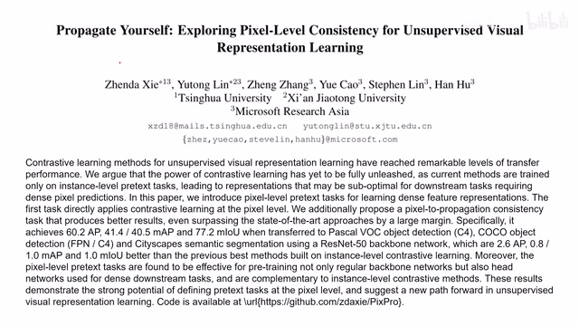
00:00:00–00:00:25 · 画面 001大家好,今天我们来快速介绍一篇论文 Propagate YourselfExploring Pixel-Level Consistency for Unsupervised Visual Representation Learning。这篇论文的核心贡献是把这个 Unsupervised Representation Learning 从原来的 Instance Level 也就是我们以图像为单位的它们相互做对比给它拓展到 Pixel-Level 也就是图像中的每个像素做对比。那么下面我们继续来看，在本文中其实作者提出了两种 Pixel-Level 的模型。
00:00:25–00:00:41 · 画面 002
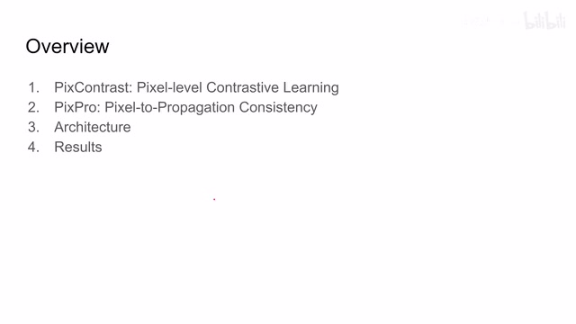
00:00:25–00:00:41 · 画面 002那一种呢叫做 pixcontrast，另一种呢叫做 pixpro。他们呢其实就是作者设计的两种不同的这个 pixel level 的这个 loss，我们会分别介绍他们。然后还有作者汇报的结果。那么首先来看这个 pixcontrast，在这里呢作者的想法其实非常简单，就像我们的 instance level 之间他们要做对比一样，我们看到熟悉的这个 contrastive learning 的 framework 啊，一张图像进来经过不同的 augmentation 来产生两个不同的 view。
00:00:41–00:00:53 · 画面 003
00:00:41–00:00:53 · 画面 00300:00:53–00:00:59 · 画面 004
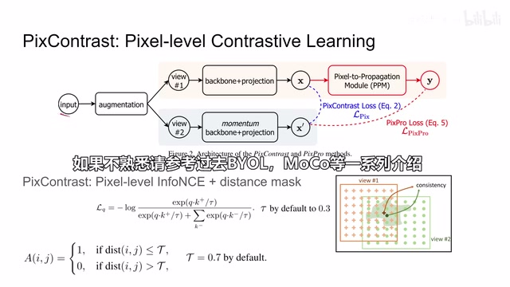
00:00:53–00:00:59 · 画面 004然后经过我们的 backbone network 我们的 encoder 过一个 projection head，这里没有 prediction head，我们得到两个 projection。但是这两个投影它区别于我们传统的 contrastive learning 的方法就是它不仅局限于是一个向量，它在这里可以是一个 2D 的 feature map。在这基础上每一个 feature map 对应的数值你就可以给它溯源到原始图像中的某一个位置的像素。那么同 instance level 的 contrastive learning 一样，
00:00:59–00:02:08 · 画面 005
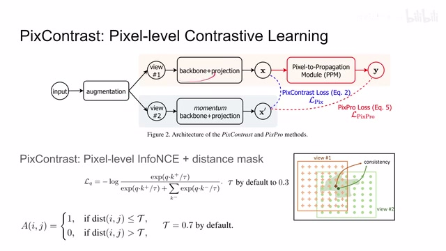
00:00:59–00:02:08 · 画面 005你的一个像素呢经过不同的图像增强它们产生的 representation 呢在我们做了这个 projection 之后呢应该是尽量接近的。所以呢这里作者使用了一个形容 InfoNCE 的这样一个 loss。但是因为作者这个原文中的这个表达实在是太啰嗦了，我这里呢直接借用了 moco 它的表达。那需要注意呢就是原来这个 q 呢这里呢变成了这个 x，那原来这个 k plus 呢和这个 k minus 呢其实就是这个 x prime。
那区别就是同一个像素对应的 X'和不同像素对应的 X'那么与之前相同呢，分子上呢是 positive sample，那分母上呢是所有的 sample。那这里的 sample 呢就是 pixel level 的 sample。那这里还有这个 hyperparameter tau，这个配置呢是一个典型的 MoCo 的配置。那因为是 MoCo 呢，我们这里就自然有一个 momentum encoder。但是呢这里存在一个问题，如果我们对所有的像素呢都应用这个 InfoNCE 这个 loss。
00:02:08–00:02:13 · 画面 006
00:02:08–00:02:13 · 画面 00600:02:13–00:02:22 · 画面 007
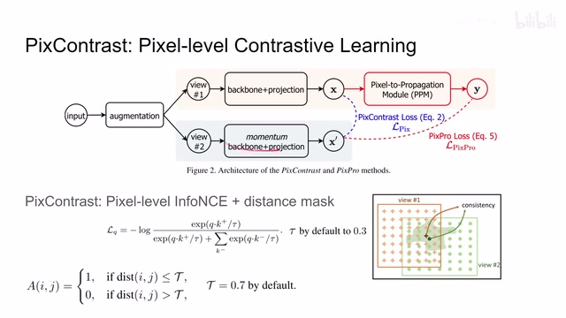
00:02:13–00:02:22 · 画面 007那其实呢这个 Loss 呢会让我们这一个 Feature Map 中的所有的像素它的 Feature 都变成同一个。因为这里它对比的不是图像这个层次这个 Instance Level 而是对比的一个像素，而这个像素的 Feature 呢它可能跟 Feature Map 中其他的 Feature 它长的是不一样的。但是呢它和其他的像素都是来源于同一张图像，那么直接做这 ContrastLoss 呢是不太合适的。因此呢这里呢作者还增加了一个基于距离的这样一个 Mask。
00:02:22–00:02:42 · 画面 008
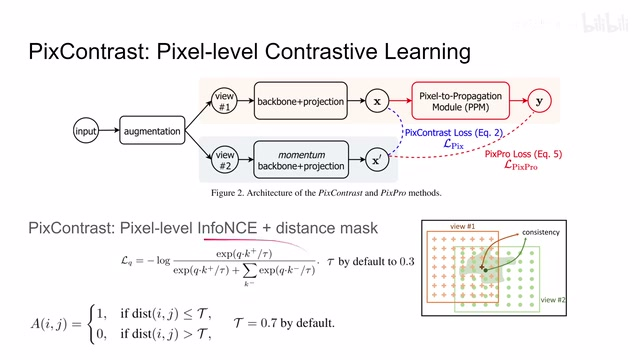
00:02:22–00:02:42 · 画面 00800:02:42–00:03:49 · 画面 009
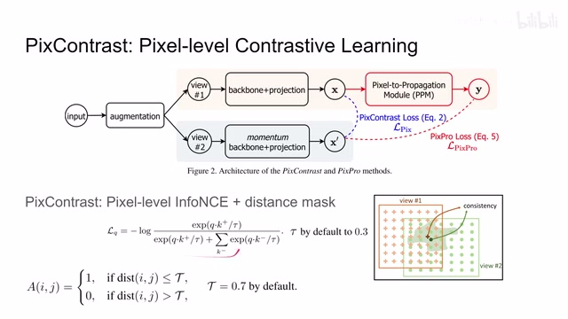
00:02:42–00:03:49 · 画面 009其实它的用意呢非常简单，就是我这一个像素只跟它周围一定距离内的像素做这个 contrastive loss。那距离它太远呢我就不要管了。那这里可以看到呢其实就是 normalize 之后一个距离，那我根据这两个像素之间的距离来来决定说它们两个之间这个 InfoNCE 是不是记录我们最终的 loss。那此外呢这里还有一个小的细节需要注意的就是因为我们在做 data augmentation 的时候呢，我们会把这个图像比如说做旋转平移。
它呢就会导致我的这个 feature map 中相同位置的这个 feature 它对应的原始像素呢是不太一样因此呢你有必要在计算这个 loss 的时候呢把我们的这个 data augmentation 造成的这个图像的位移这个坐标的改变给它同时输入到我们的这个函数里面把它记录当中这样子呢才能保证你这两个这个 projection 对应的就是原来的那个位置上的那个像素那么这个呢就是作者提出的 pix contrast 这个核心的思想然后呢我们来到这个 PixPro、pixel-to-propagation consistency 那这里呢也可以非常直观的看到相对于原来的这个 pix contrast 作者呢在这里又加了一个 pixel-to-propagation module (PPM)它呢其实就用来替代我们原来的 prediction head 这样一个作用那这个模块具体是怎么样运作的呢其他的流程呢就是这样一个图那写成式子呢是这样一个式子
00:03:49–00:05:49 · 画面 010
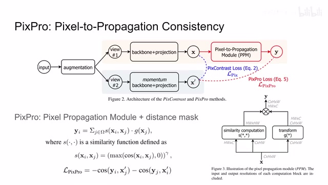
00:03:49–00:05:49 · 画面 010我们一边边来看输入一个图像它的这个 channel 高度和宽度那把它呢首先这边送到这个 similarity computation 这个 similarity 呢指的就是同一张图像中不同的像素它们之间的 feature 的 computation 当然这个相似度的函数呢你可以按你的喜好来选择这里呢作者选取了这样一个形式那么经过这样一通计算之后呢我们就得到这个像素数量乘以像素数量这样一个这个像素之间的相关性的矩阵那么与之前这个 PixContrast loss 相似的你在计算两个相似的相似程度的时候呢也会使用一个 distance mask 就是说也是你只关心的是两个相互靠近的像素它们之间这个 similarity 这个函数那如果距离太远呢这个 s 呢就直接被设置为 0 了那么这边这一帧呢作者做了一个 transform 也就是对每一个像素呢做这个 mlp 就是 1 乘 1 的 convolution
那么它的作用呢其实就像我们原来的 prediction head 那么把这两项一结合其实就是根据我们的这个 similarity 来决定这个 prediction 它的权重最后输出的这个值呢就是我们得到这个 y 那么与之前的一个 s for y 方法相似呢我们把这个 y 和我们这个 x prime 也就是 momentum 出来这一支的这个 prediction 给它对比一下使用的呢也是这个 cos similarity loss 那么这个呢就是 pix pro loss他的表达其实呢是非常简单直白了那么现在呢我们已经有了这个 pix contrast loss 还有这个 pix pro loss 那么我们现在该把它们组合组合形成一个真正能用的这个 unsupervised learning 的这个方法了那么这里呢就是作者把这个 pix pro 结合这个 instance level 的这个 contrastive loss 啊然后呢当然你也可以选择再加这个 pix contrast 的都是可以的这里呢作者使用是 SimCLR 但是呢在我们的这个 backbone 出来之后呢
00:05:49–00:05:57 · 画面 011
00:05:49–00:05:57 · 画面 01100:05:57–00:06:26 · 画面 012
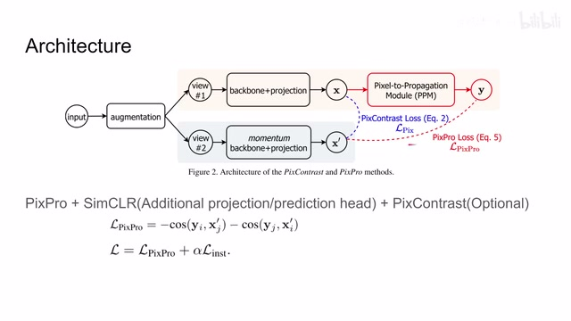
00:05:57–00:06:26 · 画面 012他用的是与 PIX Pro 不同的 projection head 还有 prediction head 其他的关于 loss 的组合就是非常简单的没什么可说的了那么下面我们直接来看到作者回报的结果那么现在既然我们有了 pixel level 的 contrastive loss 我们自然也来发挥一下 pixel level 这些方面的优势这里可以看到作者做了 PASCAL VOC 的 detection 使用的都是非常简单的标准主要就是看改进
00:06:26–00:06:51 · 画面 013
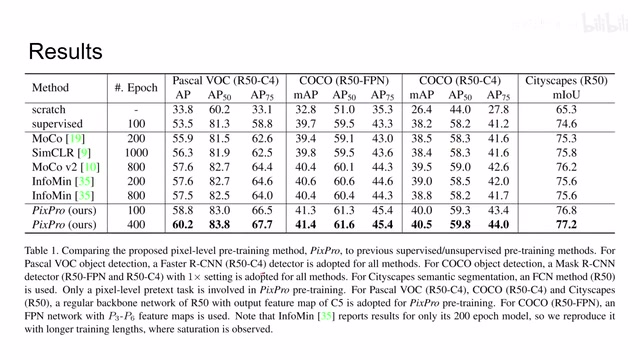
00:06:26–00:06:51 · 画面 013还有 city scapes 这是做 semantic segmentation 那么一个对比肯定是一些漂亮的数字那么再往下看就是作者做了一些 ablation 就是我们既然有了 PixContrast 有 PixPro 我们怎么样把它们组合一下来能够取得更好的效果可以看到作者通过一些实验告诉我们这些参数的选择配置的实践应该是什么样子那么包括 instance level 的 contrastive loss
00:06:51–00:07:16 · 画面 014
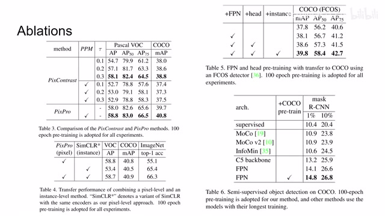
00:06:51–00:07:16 · 画面 014还有各个模块它们的相互的影响如果你感兴趣非常推荐你去原文来查看那么总的来说本文最大的亮点就是构筑了两个 pixel level 的 loss 虽然直接看下来也是一脸迷糊为什么就是按照这种方式来构建但是作者并不会把它过去失败的各种尝试写在论文里那么以上就是我对这篇论文的简单的分析感谢您的收看再见
00:07:16–00:07:36 · 画面 015
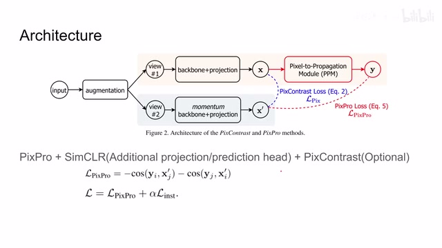
00:07:16–00:07:36 · 画面 01500:07:36–00:07:36 · 画面 016
00:07:36–00:07:36 · 画面 016转写与来源说明 · 0 个自动复核提示
保留 16 个原始语音片段，0 个片段触发自动复核提示。提示仅用于定位可能的术语、重复或识别问题，不等于已确认错误。
讲解画面为源视频截图（640×360），不是可编辑 PPT 文件。全片按每秒 2 帧扫描内容变化，逐步展开页保留；连续动画保留代表画面。清晰度受源视频限制。
原视频：paper/合集_2026-10-16_表征学习/[论文简析]Propagate Yourself Exploring Pixel-Level Consistency...[2011.10043].mp4
SHA-256：eb9ce4433eccf0f41263dc2247d33be92d06e4b5d5a7b9fcfb511cd8c18c8992
全文按视频语音与画面制作。原论文可从上方链接下载；完整资料包保留全文、原始逐字稿、字幕和校对记录。